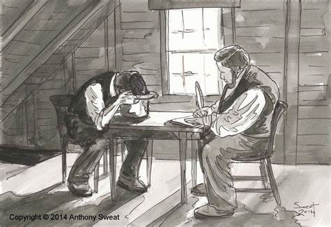

The First Vision
In the spring of 1820 Joseph Smith had his first vision. He saw God the Father and Jesus Christ. They spoke to him and instructed him. This was a truly marvelous experience for him. After he experienced this, he spoke to a preacher about his experience. In Saint’s Volume 1, it says that the preacher got angry at him and told Joseph that things like that were no more. This persecution affected Joseph. “Once Joseph discovered that sharing his vision only turned his neighbors against him, he kept it mostly to himself, content with the knowledge God had given him.” This persecution was just the beginning.
The Gold Plates
When the people in Palmyra heard that Joseph Smith was supposed to find plates of gold hidden in the side of the hill Cumorah they began to look for the plates so they could make money off the precious metal. Many of them desired to stop Joseph from obtaining the sacred record. Moroni warned him that if he wasn’t watchful he would be overpowered by wicked men who had laid plans to take them away from Joseph.
Joseph went early in the morning and got the Urim and Thummim and hid the plates in a hollow log. After several days he went to retrieve the plates from the hiding place. He grabbed the plates and hid them in a shirt and started to head back home when he was struck from behind by a man using a gun as a club. He knocked the man over and ran with the heavy plates under one of his arms as he fought of several other men on his journey home. He made it home safely with the plates and had his family nurse the injuries he obtained on the fight home, including a dislocated thumb.
The Translation
After Joseph Smith obtained the Gold Plates he tried to start translating them. There was too much opposition in Palmyra for Joseph to get much work done. Martin Harris came to be a scribe and they successfully translated 116 pages. These pages were lost when Martin Harris took them to his house to show his wife Lucy. Lucy was one of the strongest opponents of the work of the translation in this period. She did not believe in the prophet of the restoration. She even filed a complaint in court claiming that Joseph was a fraud who stole Martin’s money. Martin defended Joseph in the court proceedings.
 Translation of the Book of MormonOliver Cowdery came, and he and Joseph Smith worked hard on the translation. People in Harmony Pennsylvania, where the prophet was living at that time, had become more opposed to the Smiths and their work. The Lord commanded them to go to Fayette to live with the Witmer family so they wouldn’t be harmed by their neighbors.
After they finished translating the Book of Mormon, they began the process of getting it published and printed. In the press they were working in there was a newspaper publisher who began to make fun of the “Gold Bible” and to print excerpts from its pages to make it look silly. Joseph confronted this man, named Abner. He responded by wanting to fight Joseph Smith. Joseph said he didn’t want to fight, and by reacting calmy Abner decided to stop printing inappropriate and illegal things about the Book of Mormon. After the Book of Mormon was printed the Church of Jesus Christ was organized once more on the Earth.